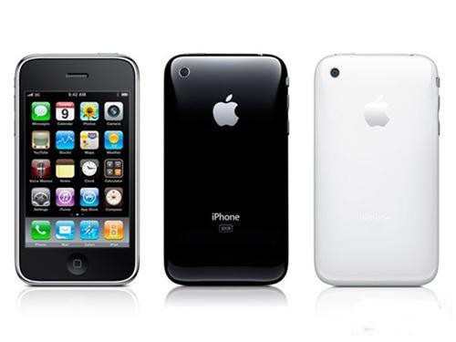

Here I can share the small gap between the iPhone 3GS and the 3G iPhone. First, the iPhone 3GS and 3G iPhones vary in weight, with the iPhone 3GS weighing 135 grams and the 3G iPhone weighing 133 grams. Second, the iPhone 3GS is different from the Model NO behind the iPhone 3G, which is the A1303 and the 1241. The iPhone 3GS back cover is still made of engineering plastic, and it is said that the polished plastic back cover can effectively reduce signal interference, but with a number of disadvantages: low strength, easy wear, fingerprinting... As for the screen anti-fingerprint coating that everyone had been looking forward to before, we forgot about it! The iPhone 3GS in your hand touches the screen a few times, and the fingerprints are still there.
Rumours a lot about the new iPhone screen are widely believed to be the final choice for the iPhone 3GS. Unfortunately, the final screen of the iPhone 3GS is no different in parameters from the previous two versions. Although the parameters are exactly the same, just as the 3G iPhone screen is slightly brighter than the iPhone, the iPhone 3GS screen has some slight differences in style compared to the iPhone 3G. As for the so-called "anti-fouling layer" on the iPhone 3GS, in the few days we tried there was no obvious sense of anti-fouling layer, the dirty time is still dirty, there are fingerprints or fingerprints, but compared to previous versions, there is no paste feeling, fingerprints are also a little lighter than before. 